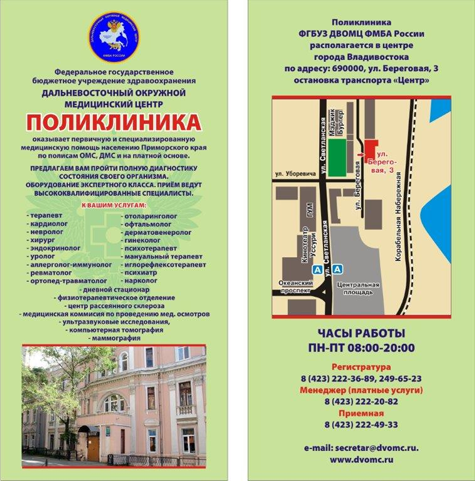

Поликлиника
27 дек 2016 в 18:05

Поликлиника оказывает лечебно-диагностическую, профилактическую, реабилитационную и консультативную помощь прикрепленному контингенту и населению Дальневосточного округа по полисам ОМС, ДМС и на платной основе.
Оказание амбулаторно-поликлинической медицинской помощи обслуживаемому контингенту осуществляется в соответствии с территориальными программами государственных гарантий оказания бесплатной медицинской помощи в объемах программы ОМС.
К прикреплённому контингенту относятся: работники предприятий водного транспорта, работники морских и речных училищ и вузов, гражданские служащие и персонал МЧС России, работники федеральных государственных учреждений, работники Следственного комитета и члены их семей, спортсмены сборных команд РФ и их ближайшего резерва, работники медицинских учреждений ФГБУЗ ДВОМЦ ФМБА России, работники предприятий отдельных отраслей промышленности.
В поликлинике ведут прием врачи по 22 специальностям
Отделения поликлиники:
-
Терапевтическое с кабинетами специалистов: в т.ч.
- ревматолог
- кардиолог
- эндокринолог
- аллерголог-иммунолог
- инфекционист
- невролог
- дерматовенеролог
-
Хирургическое: в т.ч.
- уролог
- онколог
- травматолог
- офтальмолог
- отоларинголог
- гинеколог
- проводятся обследования: ФГДС, цистоскопия
-
Отделение реабилитации и восстановительного лечения, в т.ч.:
- физиотерапия
- мануальная терапия
- ЛФК
- психотерапия
- рефлексотерапия
- Дневной стационар
-
Отделение лучевой диагностики:
- флюорография
- рентгенография костно-суставной системы
- маммография
- внутривенная урография
- ортопантомография
- компьютерная томография
- УЗИ всех органов и систем
-
Отделение функциональной диагностики:
- ЭКГ
- Холтеровское мониторирование
- спирография
- УЗИ сердца
-
Медицинская комиссия по проведению медицинских осмотров:
- предварительных
- периодических
- на право управления транспортным средством
- на право владения оружием
- определение годности в плавсостав
Работают Центры:
-
Терапевтическое с кабинетами специалистов: в т.ч.
- остеопороза (423) 231-49-81
- водолазно-медицинский центр (423) 293-00-07
- профессиональной патологии
- рассеянного склероза
- регистрационно-компьютерное отделение.
Телефоны:
- регистратура 8(423) 222-36-89, 249-65-23
- касса (платные услуги) 8(423) 222-20-82
- приемная 8(423) 222-49-33
Правила внутреннего распорядка для потребителей услуг:
-
Поликлиника: Время работы: понедельник – пятница с 08.00 – 20.00, суббота с 09.00- 13.00 (дежурный терапевт).
Первичный приём пациентов осуществляется по предварительной записи через регистратуру либо c помощью электронного сайта: dvomc.ru
- Клинико-диагностическая лаборатория — 08.00-14.00
- Отделение лучевой диагностики — 08.00 – 14.30
- Отделение реабилитации и восстановительного лечения — 08.00 – 18.00
- Дневной стационар — 08.00 – 18.00
- Отделение функциональной диагностики — 08.00- 20.00
- Центр водолазной медицины — 08.00 – 16.12
- Центр рассеянного склероза — 08.00 – 16.12
- Терапевтическое отделение — 08.00- 20.00
Хирургическое отделение:- Хирург – 08.00 – 20.00
- Гинеколог – 08.00 – 16.12
- Уролог – 08.00 – 16.12
- Офтальмолог – 08.00 – 18.00
- Отоларинголог – 08.00 – 20.00
- Отделение эндоскопии – 08.00 – 18.00
| Год рождения | Пол | Рост, см | Вес, кг | Масть |
|---|---|---|---|---|
| 2010 (6 лет) | жеребец | 195 | 320 | гнедая |
| 2003 (13 лет) | пример, если будет две строки | 236 | 190 | рыжая |
| 2010 (6 лет) | кобыла | 230 | 400 | серая |
| 1999 (17 лет) | кобыла | 199 | 550 | вороная |
| 2014 (2 года) | жеребец | 188 | 150 | гнедая |
| 2016 (1 год) | жеребец | 255 | 190 | рыжая |